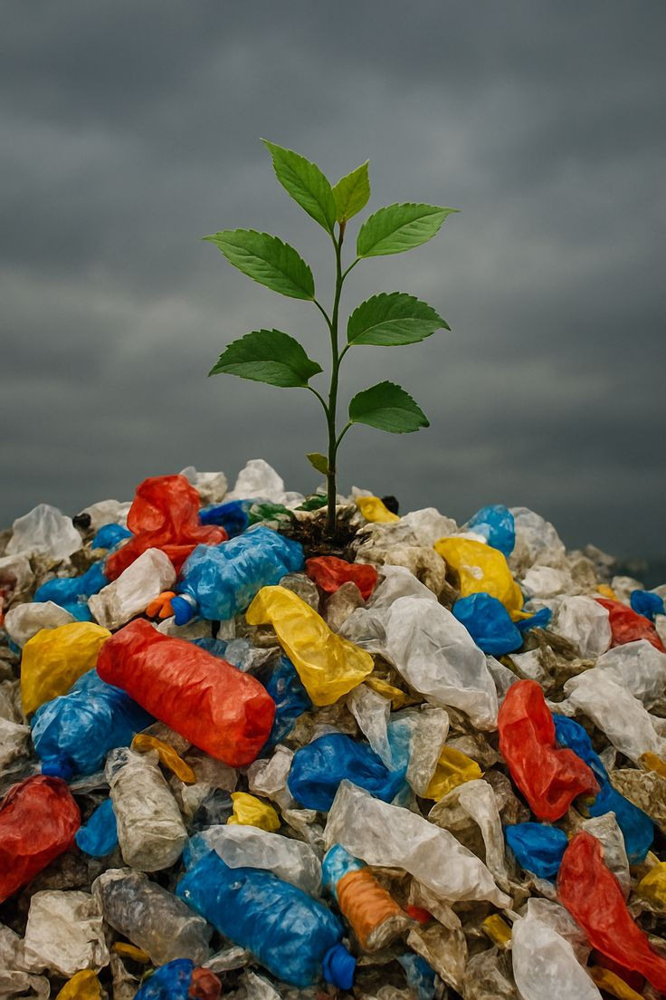
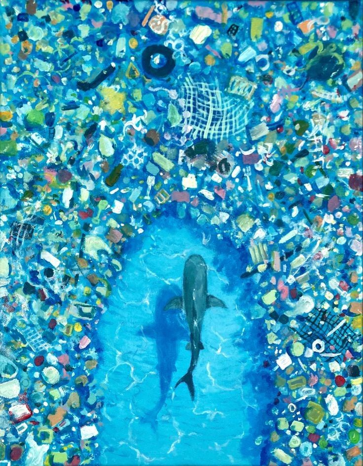

Primeiro post
Por: Yasmim Denardin
Qual é o significado do nome?
Sendo uma grande fã de Percy Jackson e mitologia grega, escolhi Gaia por ser considerada a mãe Terra, Deusa primordial e responsável pela origem dos seres vivos.
Boas-vindas! Fique por dentro de todas as novidades e curiosidades sobre o planeta Terra ;)
Por: Yasmim Denardin
Qual é o significado do nome?
Sendo uma grande fã de Percy Jackson e mitologia grega, escolhi Gaia por ser considerada a mãe Terra, Deusa primordial e responsável pela origem dos seres vivos.
Por: Yasmim Denardin

Nos últimos 50 anos, mais de 90% do aquecimento global resultante da atividade humana foi absorvido pelo oceano.
Isso resulta no aumento da temperatura dos oceanos e na acidificação dos oceanos, que é prejudicial a muitas espécies de peixes.
Esse problema também causa danos a habitats como os corais, que são fundamentais para a vida marinha.
Os recifes de coral formam um ecossistema único e valioso, fornecendo alimentos e abrigo para diversas criaturas marinhas, além de trazer muitos benefícios para os seres humanos.
Por: Yasmim Denardin

Um pedaço de plástico pode levar mais de 400 anos para se decompor.
O plástico é um dos materiais mais persistentes no meio ambiente. Produtos como sacolas, garrafas e canudos podem permanecer na natureza por séculos.
Por isso, evitar o uso de descartáveis e reciclar corretamente é essencial para reduzir o impacto ambiental.
Por: Yasmim Denardin

Cada árvore adulta pode absorver até 150 kg de CO₂ por ano.
Além de produzirem oxigênio, as árvores ajudam a combater as mudanças climáticas ao capturar o dióxido de carbono da atmosfera.
Plantar e preservar áreas verdes é uma das maneiras mais eficazes de contribuir para um futuro sustentável.